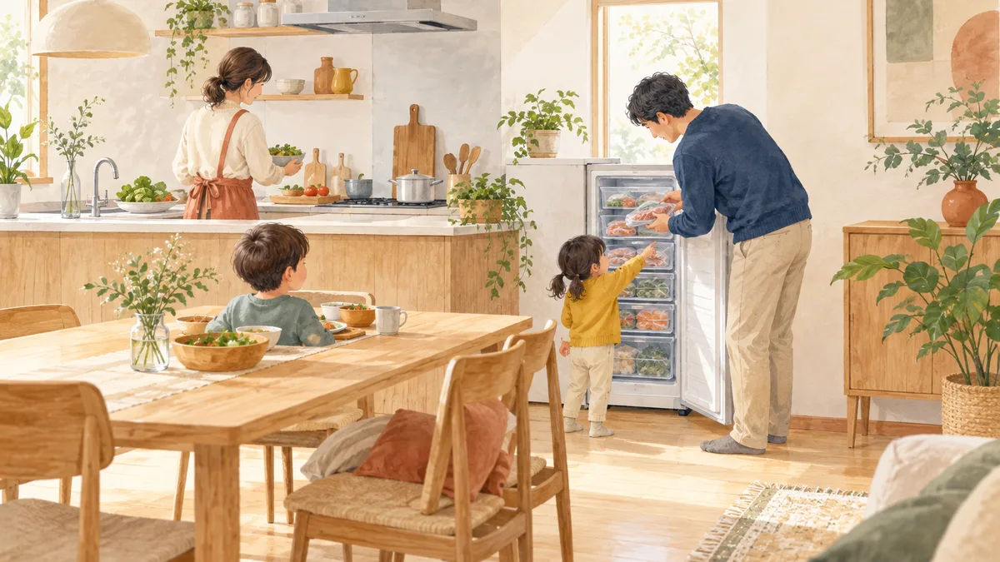

冷凍庫 おすすめ 8 機種を比較｜セカンド冷凍庫の容量・電気代・置き場所

本記事にはアフィリエイト広告（PR）が含まれます。紹介した商品を購入されると、当サイトに報酬が入ることがあります。内容は運営者が調べて書いています。
冷蔵庫の冷凍室だけでは足りなくなり、2 台目の冷凍庫を考える人向けの記事です。ハイアールと三菱電機の公式サイトに載っている容量・年間消費電力量・外形寸法を 2026 年 10 月 20 日に読み、年間の電気代（年間消費電力量 × 31 円）と、楽天市場の市販価格（同型番・安い順 3 件の中央）で比べました。個人の使用感は書かず、数字だけで判断できる形にしています。
この記事でわかること・結論
- 年間電気代は 8 機種で年 7,440〜13,919 円。 同じ 100L 台でも、ハイアール JF-UFS11B（107L・240kWh）は年 7,440 円、三菱 MF-U12K（121L・360kWh）は年 11,160 円で、差は年 3,720 円です。
- 安さは本体価格だけで決めない。 市販価格が最も安いのは JF-UFS11B の 35,270 円ですが、5 年間の「本体＋電気代」では JF-UFS11B が 72,470 円、MF-U12K が 96,950 円と、電気代の差が本体価格の差を上回ります（表 4）。
- 置き場所の寸法を先に測る。 幅は 450mm（JF-UFS11B）から 692mm（JF-CF13A の上開き）まで、高さは 865mm から 1,496mm（三菱 MF-U22K）まで。冷凍庫の上にレンジを置けるか、扉が開くかまで確認してから機種を絞ります。
- 仕様は各メーカー公式サイトの 2026 年 10 月 20 日時点の掲載値です。電気代の単価 31 円/kWh は全国家庭電気製品公正取引協議会の目安（令和 4 年 7 月改定）で、契約する電力会社の単価とは違います。
- 市販価格は楽天市場の検索結果（2026 年 10 月 20 日取得）から作った参考値で、在庫と価格は日々変わります。同型番の出品が 3 件に満たない機種は価格表に載せていません。買う前に自分で確認してください。
前開きと上開き: 向く使い方の違い
セカンド冷凍庫は大きく「前開き（縦型）」と「上開き（チェスト型）」に分かれます。ハイアールの公式ページでは、前開きは「扉を開けるとストック内容がひと目でわかる」、上開きは「冷気が流出しにくく庫内の温度変化が小さい」と説明されています。この記事の 8 機種では、前開きが 7 機種、上開きがハイアール JF-CF13A の 1 機種です。
| 項目 | 前開き（縦型） | 上開き（チェスト型） |
|---|---|---|
| この記事の該当機種 | 7 機種（高さ 1,126〜1,671mm） | JF-CF13A（高さ 865mm・幅 692mm） |
| 置き場所 | 幅 450〜595mm と細身。床面積は小さいが高さが要る | 幅が広い。床面積が要るが高さは 865mm で収まる |
| 出し入れ | 棚・バスケットで分けやすく、中身が見える | 大きな箱・塊肉を置きやすい。下の物は取り出しにくい |
| 電子レンジ置き | ハイアールは天面を耐熱 100℃・耐荷重 30kg と案内（電子レンジの機種によって置けない場合あり） | 天面の用途は機種ごとに取扱説明書で確認 |
| 向く用途 | 日用品の冷凍食品・作り置き・下味冷凍 | 返礼品の大箱・まとめ買いの肉・魚の長期保存 |
前開きの冷凍室は「棚 6 段・クリアバスケット 5 個付き」（ハイアール JF-UF15B の公式説明）のように区切りがあり、日常の出し入れに向きます。上開きは JF-CF13A の公式説明で「ふるさと納税返礼品やお取り寄せ、釣ってきた魚、塊で買った肉」の保存例が挙げられています。
8 機種の公式仕様を並べる
ハイアールは 2026 年 10 月 20 日時点の公式冷凍庫一覧から 5 機種、三菱電機は U シリーズ 3 機種を取り上げました。容量・年間消費電力量・外形寸法はいずれも各機種の公式ページの値です。
| 機種 | 開き方 | 容量 | 年間消費電力量 | 外形寸法（幅×奥行×高さ mm） |
|---|---|---|---|---|
| ハイアール JF-UFS11B | 前開き | 107L | 240kWh/年 | 450×585×1,275 |
| 三菱 MF-U12K | 前開き | 121L | 360kWh/年 | 480×586×1,126 |
| ハイアール JF-CF13A | 上開き | 132L | 255kWh/年 | 692×568×865 |
| ハイアール JF-UF14B | 前開き | 135L | 291kWh/年 | 502×598×1,175 |
| 三菱 MF-U14K | 前開き | 144L | 449kWh/年 | 480×586×1,291 |
| ハイアール JF-UF15B | 前開き | 152L | 322kWh/年 | 502×598×1,300 |
| 三菱 MF-U22K | 前開き | 218L | 330kWh/年 | 542×650×1,496 |
| ハイアール JF-NUF226B | 前開き | 226L | 322kWh/年 | 595×632×1,671 |
三菱は公式ページに省エネ基準達成率も載せており、MF-U12K が 113%、MF-U14K が 105%、MF-U22K が 204% です。同じ U シリーズでも 218L の MF-U22K は 144L の MF-U14K より年間消費電力量が小さく（330kWh と 449kWh）、容量が大きい方が電気代も小さい逆転が起きています（大きい機種の方が年間消費電力量が小さい、というのは三菱公式ページの掲載値どおりで、2026 年 10 月 20 日に再確認しました）。容量の大きさだけで電気代を想像せず、年間消費電力量の欄を見てください。
年間電気代の計算（式つき）
計算は「年間電気代 ＝ 年間消費電力量（kWh/年）× 31 円/kWh」です。31 円は全国家庭電気製品公正取引協議会の目安単価（令和 4 年 7 月改定）で、現在の契約単価とは異なる場合があります。ご自宅の単価に置き換えて計算し直してください。
| 機種 | 計算式 | 年間電気代 | 1L あたり（年） |
|---|---|---|---|
| ハイアール JF-UFS11B（107L） | 240 × 31 | 7,440 円 | 約 70 円 |
| ハイアール JF-CF13A（132L） | 255 × 31 | 7,905 円 | 約 60 円 |
| ハイアール JF-UF14B（135L） | 291 × 31 | 9,021 円 | 約 67 円 |
| ハイアール JF-UF15B（152L） | 322 × 31 | 9,982 円 | 約 66 円 |
| ハイアール JF-NUF226B（226L） | 322 × 31 | 9,982 円 | 約 44 円 |
| 三菱 MF-U22K（218L） | 330 × 31 | 10,230 円 | 約 47 円 |
| 三菱 MF-U12K（121L） | 360 × 31 | 11,160 円 | 約 92 円 |
| 三菱 MF-U14K（144L） | 449 × 31 | 13,919 円 | 約 97 円 |
1L あたりの値は「年間電気代 ÷ 容量」を四捨五入したものです。同じ 120〜150L 帯で JF-UF14B（135L）の年 9,021 円と MF-U14K（144L）の年 13,919 円を比べると、差は年 4,898 円、5 年で 24,490 円になります。月に直すと約 408 円の差です。
注意点が 2 つあります。年間消費電力量はメーカーの測定条件での値で、夏の室温が高い台所・開閉が多い家庭では増えます。また 218L の MF-U22K と 226L の JF-NUF226B は、実際にその容量を使い切るほど冷凍食品を入れるかどうかで割安感が変わります。使う量が少ないなら、容量が小さい機種の方が総額は小さくなります。
市販価格と 5 年間の総額
楽天市場で同型番・新品・安い順 3 件（同じ運営会社は 1 件）の中央値を 2026 年 10 月 20 日に取得しました。取得できた機種は 6 つです（型番を商品名に含む出品のみ、保証・部品は除外）。
| 機種 | 市販価格（中央値） | 5 年間の電気代 | 5 年の総額 |
|---|---|---|---|
| ハイアール JF-UFS11B（107L） | 35,270 円 | 37,200 円 | 72,470 円 |
| ハイアール JF-UF14B（135L） | 36,179 円 | 45,105 円 | 81,284 円 |
| ハイアール JF-CF13A（132L・上開き） | 49,800 円 | 39,525 円 | 89,325 円 |
| 三菱 MF-U12K（121L） | 41,150 円 | 55,800 円 | 96,950 円 |
| 三菱 MF-U22K（218L） | 76,700 円 | 51,150 円 | 127,850 円 |
| ハイアール JF-NUF226B（226L） | 84,800 円 | 49,910 円 | 134,710 円 |
MF-U14K（144L）と JF-UF15B（152L）は、この日は同型番を載せた店が 1〜2 件しかなく中央値を作れなかったため、価格表から外しました（仕様は表 2・表 3 に残してあります）。買う前に楽天・家電量販店で確認してください。
JF-UFS11B は 35,270 円（ジェイ・ISM、イーシーカレント）と 35,271 円（エディオン）の 3 店で、中央が 35,270 円です。JF-UF14B（36,179 円）はジェイ・ISM・ヤマダ電機・キムラヤが同額でした。MF-U12K は 40,689 円、41,150 円、41,200 円の 3 件で、中央が 41,150 円です。JF-CF13A は 49,800 円で複数の店が並んでいます。
5 年の総額で見ると、MF-U12K と JF-UFS11B の差は 24,480 円です。うち本体価格の差が 5,880 円（41,150 − 35,270）、電気代の差が 18,600 円（55,800 − 37,200）です。上開きの JF-CF13A は本体が 14,530 円高い（49,800 − 35,270）一方、電気代は 5 年で 2,325 円高いだけで、総額は 16,855 円高です。上開きの強みは電気代ではなく、大きな食材と長期保存にあります。
ハイアール JF-UFS11B
幅 450mm の細身で年 7,440 円。イーシーカレントの販売ページです。設置場所の幅・奥行・高さと、ドアを開けるスペースを測ってから選んでください。
置き場所と寸法の確認
冷凍庫は本体の寸法に加えて、放熱と扉の開閉の余裕が要ります。ハイアールの各機種ページには『据付必要奥行寸法』の欄があり、取扱説明書にも設置の注意があります。数値は機種で違うので、メーカーの書式で確認してください。
| 置き場所 | 見る寸法 | 相性のよい機種 |
|---|---|---|
| 台所の隙間（幅 50cm 未満） | 幅 450〜480mm | JF-UFS11B（幅 450mm）、MF-U12K・MF-U14K（幅 480mm） |
| ダイニング・壁際（幅 50〜55cm） | 幅 502〜542mm | JF-UF14B・JF-UF15B（幅 502mm）、MF-U22K（幅 542mm） |
| 通路・玄関近く（幅 60cm 弱） | 幅 595mm・高さ 1,671mm | JF-NUF226B |
| 床に余裕があり高さを抑えたい | 幅 692×高さ 865mm | JF-CF13A（上開き） |
レンジを冷凍庫の上に置く使い方は、ハイアールの JF-UF15B・JF-UFS11B の公式説明に載っています（耐熱 100℃・耐荷重 30kg、電子レンジの機種によっては置けない場合あり）。高さ 1,175mm の JF-UF14B にレンジを置くと、天面の高さが 1m 超になるため、肩より低い位置で使えるか確認してください。
搬入経路の幅も測ります。玄関・階段・廊下で最も狭い箇所が、本体幅に梱包材の分（数 cm）を足した値より広いか、が条件です。JF-NUF226B は高さ 1,671mm あり、天井の低い部屋・階段の曲がりでは入らない場合があります。
容量の決め方（まとめ買い・返礼品）
容量は「増やしたい分」を数えて決めます。式は『必要な容量（L）＝（週の冷凍ストックの体積 ＋ 返礼品の箱の体積 ＋ 予備）× 1.2』です。体積は自分で測った値を入れてください。1.2 は庫内を詰め込みすぎないための余裕率という私の仮定で、メーカーの基準ではありません。以下の 15L・30L・10L も仮定の数字で、実測値ではありません。
- 週のまとめ買い（例: 15L とする）。 冷凍食品・肉の小分けなど。冷蔵庫の冷凍室に収まらない分だけを数えます。
- 返礼品の箱（例: 30L とする）。 商品ページの外寸（縦×横×高さ cm）から、箱の体積（cm³ ÷ 1,000 ＝ L）を計算します。
- 予備（例: 10L とする）。 作り置きの急な増減用です。
- 合計 55L × 1.2 ＝ 66L。 この例なら 107L の JF-UFS11B で足ります。返礼品を 2 箱以上受けるなら 132〜152L 級を検討します。
ふるさと納税の返礼品は寄付額の 3 割以内の地場産品で、冷凍で届く品目は自治体ごとに量が違います。ワンストップ特例の期限（寄付翌年 1 月 10 日必着）や寄付の年の考え方は、ふるさと納税の冷凍返礼品（ハンバーグ）の記事と合わせて確認してください。冷凍の箱は届く時期が重なることがあり、受け取る月の予定を先に書き出すと、必要な容量を見誤りにくくなります。
まとめ買いの管理は、まとめ買いのストックの記事が参考になります。宅配の冷凍食品を使う世帯は、生協の宅配の記事で届く量を確認してから容量を決めるのも手です。
判断の分岐: あなたはどれか
- 台所の隙間が幅 50cm 未満で、冷凍食品を少し増やしたい → JF-UFS11B（107L・年 7,440 円）。
- 幅 50cm 前後で 130〜150L が欲しい、価格を抑えたい → JF-UF14B（135L・年 9,021 円・36,179 円）。
- 返礼品の大箱や塊肉を長く保存したい、床に幅 70cm 弱が取れる → JF-CF13A（132L・上開き・年 7,905 円・49,800 円）。
- 家族 4 人以上で 200L 超が必要 → MF-U22K（218L・年 10,230 円）または JF-NUF226B（226L・年 9,982 円）。市販価格は MF-U22K が 76,700 円、JF-NUF226B が 84,800 円（表 4）。
- メーカーを三菱で絞りたい → 121L の MF-U12K は年 11,160 円で、144L の MF-U14K は年 13,919 円。小さい方が電気代も小さい点は確認しておく。
ハイアール JF-CF13A
幅 692×奥行 568×高さ 865mm。上開きで大箱を置ける機種です。設置場所の床面積と、上に物を置かない場所かを確認してください。
選んで置くまでの手順（6 手順）
- 置き場所の幅・奥行・高さを測る。 搬入経路（玄関・階段・廊下）の最も狭い箇所も測る。
- 必要な容量を式で出す。 『（ストック＋返礼品＋予備）× 1.2』で計算し、上の容量帯に当てはめる。
- 前開きか上開きかを決める。 日常の出し入れ重視なら前開き、大箱・長期保存重視なら上開き。
- 年間消費電力量で電気代を計算する。 年間消費電力量 × ご家庭の単価（目安は 31 円）。5 年の総額は『本体価格 ＋ 年間電気代 × 5』。
- 楽天・家電量販店で同型番を 3 店確認する。 設置・リサイクル・延長保証の有無と、配送日も見る。
- 置いたら 1 日置いて電源を入れる。 取扱説明書の指示に従い、温度が安定してから食品を入れる。
よくある失敗 5 つと回避策
- 幅だけ測って奥行・高さを見ていない。 表 2 のとおり奥行は 568〜650mm あり、扉を開ける余白も要ります。奥行と扉の開き方向（右開きが中心）まで測ってください。
- 容量が大きい＝電気代が高いと思い込む。 218L の MF-U22K（330kWh）は 144L の MF-U14K（449kWh）より年間消費電力量が小さい。年間消費電力量の欄を見てください。
- 本体の安さだけで選ぶ。 5 年の総額では電気代が本体価格の差を上回る例があります（MF-U12K と JF-UFS11B で電気代の差 18,600 円、本体価格の差 5,880 円）。
- 入りきらないほどの返礼品を受ける。 返礼品の箱の外寸を確認せずに申し込むと、庫内が一杯になります。寄付の前に箱の体積を式に入れてください。
- 搬入経路を確認していない。 高さ 1,671mm の JF-NUF226B のような大型は、階段・廊下の曲がりで入らないことがあります。経路の最小幅を測り、販売店の搬入サービスの条件を確認してください。
よくある質問
セカンド冷凍庫の年間電気代はいくらですか。
前開きと上開き（チェスト型）はどちらがよいですか。
60〜200L のどの容量を選べばよいですか。
霜取りは必要ですか。
ふるさと納税の返礼品を入れるには何リットル必要ですか。
冷凍庫の置き場所に必要な隙間はありますか。
電気代を下げるにはどうしますか。
出典
- ハイアール 冷凍庫 製品一覧（機種・容量の確認、2026-10-20）
- ハイアール JF-UFS11B（107L・240kWh/年・幅 450×奥行 585×高さ 1,275mm）
- ハイアール JF-UF14B（135L・291kWh/年・502×598×1,175mm）
- ハイアール JF-UF15B（152L・322kWh/年・502×598×1,300mm）
- ハイアール JF-CF13A（132L・255kWh/年・692×568×865mm）
- ハイアール JF-NUF226B（226L・322kWh/年・595×632×1,671mm）
- 三菱電機 MF-U12K（121L・360kWh/年・480×586×1,126mm・省エネ基準達成率 113%）
- 三菱電機 MF-U14K（144L・449kWh/年・480×586×1,291mm・同 105%）
- 三菱電機 MF-U22K（218L・330kWh/年・542×650×1,496mm・同 204%）
- 全国家庭電気製品公正取引協議会 電気料金の目安単価 31 円/kWh（令和 4 年 7 月改定）
- 楽天市場 JF-UFS11B-W イーシーカレント（35,270 円、2026-10-20 取得）
- 楽天市場 JF-UF14B-H ジェイ・ISM（36,179 円、2026-10-20 取得）
- 楽天市場 JF-CF13A-W コジマ（49,800 円、2026-10-20 取得）
- 楽天市場 MF-U22K-W デジタルクラフト（76,700 円、2026-10-20 取得。ほか 76,700 円・79,000 円）
- 楽天市場 JF-NUF226B-W（77,980 円、2026-10-20 取得。ほか 84,800 円・92,808 円で中央 84,800 円）
- 楽天市場 MF-U12K（41,150 円、2026-10-20 取得。ほか 40,689 円・41,200 円）